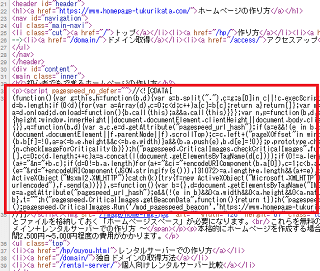
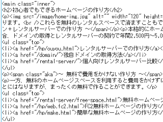
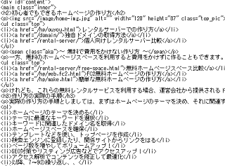

「mod_pagespeed」によるSEO的な影響はあるのか？
Googleが開発したウェブサイト高速化ツールに「mod_pagespeed」がありますが、こちらを利用するとSEO対策上の影響はあるのでしょうか？
当サイト運営者も数か月ほど前、姉妹サイトにて「mod_pagespeed」を利用してみたのですが、ブラウザで確認してみると書いた覚えのないコードがHTMLソースに挿入されてしまいました。
■ブラウザでのHTMLソース

「pagespeed_no_defer」とか「mod_pagespeed_beacon」などの文字列があったため、これは「mod_pagespeed」によるページスピード最適化によるものであることはすぐに分かったのですが、大量の文字列が挿入されてしまうことには多少の抵抗感があります。
そこで調べてみたのですが、レンタルサーバー内のHTMLファイルについては、もちろん何の変更もありませんでした。
■サーバー内のHTMLファイル

この「mod_pagespeed」は、サーバーからブラウザへデータを送信する際にHTMLやCSS、画像などを最適化して転送するものですので、元のデータ自体まで変更されるわけではないです。
次に、Googleのインデックスを調べてみたのですが、キャッシュされた情報についても特に何の変更もなく、サーバー内のファイルとほぼ同一の状態でした。
■Googleのインデックス

１部、Javascriptなどの改行関連は削除されているようにも感じますが、これが「mod_pagespeed」の影響によるものかどうかは不明です。いずれにしても改行のみで、文字列的な違いはないようなので、SEO的な影響はないものと思います。
また、W3CのHTML Checkerで調べてみても特にエラーはなく、サーバー内のHTMLファイルどおりに読み込まれているようです。
このことから推測するに、この「mod_pagespeed」というのは、ブラウザがレンダリングする際に最適化してデータを転送するツールであって、プログラムなどの機械的なアクセスについては対象外なのではないか、そう感じています。（※詳細不明）
そのため、ブラウザで表示されるHTMLソースはどうであれ、Googleのインデックスには特に影響がないものと当サイト運営者は感じており、結果としてSEO対策への影響は何もないのではないか、そう推測しております。
むしろ、サイトが高速に表示されることにより、SEO対策的にはプラスの方向によい影響が出てくるものと感じています。
いずれにしても、Googleが開発したツールということですので、SEO対策的な影響が出ないような仕様になっているかと思いますので、安心して利用できるかと思います。
この「mod_pagespeed」については、エックスサーバーやSIXCOREなどで簡単に利用できますので、ウェブサイトを高速化したい方は試してみるとよいかもしれません。
（※追記：2019年3月28日にて「mod_pagespeed」の新規受付は終了になりました。）